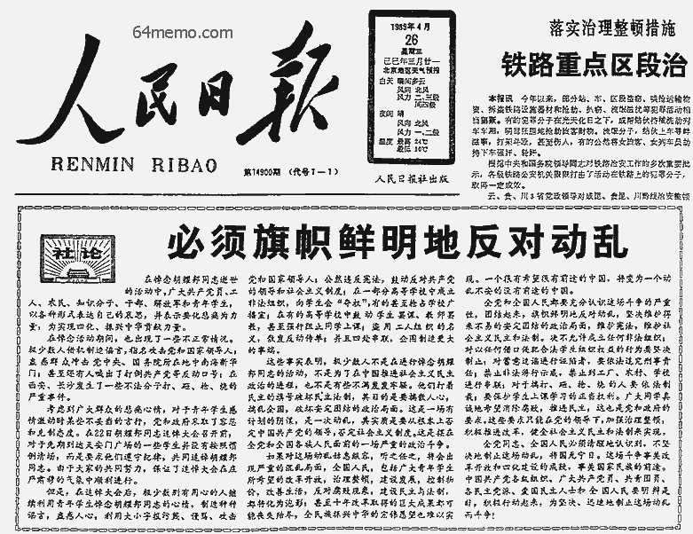

上一个帖子介绍了“4·26社论”发布之前，民间（尤其是大学生）的动向。今天来聊一下，当年朝廷发布社论的决策过程。
俺在前面的帖子已经介绍了4月22日的胡耀邦追悼会。
在追悼会结束的时候，几位朝廷要员（老赵、李鹏、杨尚昆...）送邓小平离开大会堂。老赵当着几位朝廷高官的面，向老邓提出了处理学潮的三条原则性建议，并得到老邓的认可。既然老邓认可了，在场的其它几位高官也无异议。
以下是赵紫阳的三条原则：
从这三条原则来看，老赵希望通过【温和】的方式给学运降温。而且这三条原则得到当时几个主要领导人的【一致同意】。即使是保守派的李鹏，也认可这三条原则。在李鹏23日的日记中有如下叙述：
按照原定计划，老赵在4月23日下午4点离开北京，出访北朝鲜一周。
以当时的政局，老赵有理由推迟出访。早在新华门事件（4月20日）的时候，副总理田纪云（改革派骨干）就曾力劝老赵推迟访问。但是老赵坚持按原定计划去北朝鲜。为啥捏？俺觉得有如下原因：
1. 老赵低估了学生的热情——他认为追悼会之后，学生的热情会逐渐消退。
2. 当他提出的三原则被老邓认可之后，他更加觉得，事态会很快平息。
3. 他低估了保守派的阴险（后面会提到）。
老赵走了之后，排名第二的总理李鹏就名正言顺代理主持裆中央的工作（这就是传说中的“监国”）。这样一来，李鹏就有机会从中搞鬼。别看李鹏长得傻，政治手腕很会耍。他抓住了这个千载难逢的机会，狠狠地搞了一下。
就在老赵离开京城的第二天上午，北京市长陈希同找到北京市委书记李锡铭，两人的对话如下。请注意，陈希同首先使用了“动乱”这个关键词汇。
《天安门文件》一书还提到：
李陈二人在下午15点去人民大会堂找万里，让万里拿主意。万里这个人，在经济方面是改革派（主政安徽的时候，搞了很出名的“包产到户”），但政治方面像是墙头草（后续帖子还会提到万里的这个毛病）。再加上万里当时是人大委员长，属于无实权的花瓶。所以当李陈二人找到他，让他拿主意的时候，万里就把皮球踢给李鹏（毕竟李鹏是监国嘛）。李鹏接到万里的电话——简直求之不得——当即提出连夜召开碰头会。
另据官方的《1989北京制止动乱平息反革命暴乱纪事》（第41页）记载：
当晚20点，李鹏主持政治局碰头会。据《李鹏日记》记载，主要有如下朝廷大员参加（也算是辛苦加班）：
李鹏（政治局常委）、乔石（政治局常委）、胡启立（政治局常委）、姚依林（政治局常委）、杨尚昆（政治局委员、八元老之一）、万里（政治局委员、人大委员长）、田纪云（政治局委员、副总理）、宋平（政治局委员）、李锡铭（政治局委员、北京市委书记）、丁关根（政治局候补委员）、陈希同（北京市长）、李铁映（国家教委主任）、何东昌（国家教委副主任）等。
李鹏一上来的发言就给会议定了基调：
1. 为啥李鹏及北京市委的态度，变得这么快？
老赵是在4月23日下午4点离开北京去朝鲜访问。在老赵离开之前，北京市委和国家教委并没有提出“动乱”警告。当时的朝廷高官对于老赵的三条原则（温和处理）也没有异议。为啥老赵离开才半天，北京市委的李锡铭和陈希同，以及国家教委的李铁映，就把学运上纲上线，提升到“全国性动乱”的高度？难道23日那天有什么震撼性的事件发生吗？
大伙儿不妨回顾一下前一个帖子。在23日那天，只有一件事情值一提——那就是北高联在23日晚上成立。难道说，成立一个学生组织，就会对整个国家造成动乱的风险吗？如果真是这样，那伟光正的统治也太脆弱了吧？
所以，23日民间发生了啥事并不重要；问题的关键在于官方发生了啥事儿。那就是——23日下午老赵离开北京，李鹏临时监国。只有这样，才能解释李鹏以及北京市委为何在24日突然做出这么多动作。
2. 为啥政治局委员会被误导？
对于这个问题，赵紫阳在回忆录《改革历程》中提了他的看法：
在23日当天，北京出现的大字报很多（估计成百上千），真正激进的言论并不多。但是北京市委以及李鹏，故意把那些最激进的大字报拿到政治局会议上来说事儿。这是一种典型的忽悠手法——选择性披露信息。举个例子：如果你熟悉 CCAV 的“新闻联播”，应该晓得“新闻联播”惯用的伎俩是：对内报喜不报忧，对外报忧不报喜——这就是典型的“选择性披露信息”。通过这种手法，可以有效误导信息的接收者（关于此种手法的更多介绍，可以参见俺的另一篇博文《比“欺骗”更狡猾的洗脑——基于【真实数据】进行忽悠》）
3. 为啥改革派官员没有提出异议？
参加碰头会的人里面，至少胡启立、田纪云、万里都可以算是改革派的官员。为啥他们没有提出质疑捏？俺来分析一下。
前面说了，“选择性披露信息”具有很强的误导性。不排除某些改革派官员被其误导。另外，即使当天参会的改革派官员没有被误导，也很难对北京市委的材料提出质疑。为啥捏？
首先，改革派官员缺乏自己的消息渠道。而北京市委有自己的消息渠道（北京市国安局）。这种信息不对称，导致了北京市委可以人为夸大事件的严重性。
其次，胡启立和田纪云等人，相比姚依林和李鹏，无论是职务还是资历都不够。而伟光正是很强调等级森严滴。所以他们即使没有被误导，也不方便在会议上提出质疑。
25日上午9点，几名朝廷大员准时在老邓家中会合。在本系列中，这已经是邓太上皇第三次在自己的寝宫召集帝国重臣开会了。为了省事儿，俺直接摘录《天安门文件》中的会议纪要。请大伙儿仔细揣摩保守派官员的发言，尤其是俺标注粗体的地方。小括号中的斜体文字是俺加的注解。
1. 老邓为啥态度转变？
22日的追悼会上，老赵向老邓提出了三条原则（温和处理），老邓表示同意。为啥到了25日（仅仅过了三天），老邓就同意了“动乱”的定性捏？
在本系列前面的帖子，俺介绍过老邓的意识形态——他是经济上的改革派、政治上的保守派。他经常挂在嘴边的就是：“坚持四项基本原则”、“反资产阶级自由化”、“稳定压倒一切”......
在邓家开会时，李鹏等人故意挑选一些大学生的过激言论，说给老邓听。正是这些言论戳到老邓的痛处，触动了他内心最敏感的神经。所以老邓才会“宁可信其有，不可信其无”，同意“动乱”的定性。
另外还有一个原因是：老邓在文革期间饱受红卫兵摧残，他大儿子邓朴方也是被红卫兵搞成残废。所以，邓对学运抱有某些天然的敌意（让他不由自主地想起红卫兵的迫害）。
2. 陈希同到底有没有责任？
就在上个月（2012年5月），香港出版了《陈希同亲述——众口铄金难铄真》一书（俺的网盘上有分享）。在此书中，陈希同极力为自己在六四期间的言行辩护，并把很多责任推到李锡铭头上（反正李锡铭已经死了，死无对证）。按照陈希同的说法，当年李锡铭是北京市委书记，而且还是政治局委员，官比他大，很多决定都是李锡铭策划滴。
但是俺认为：陈希同和李锡铭两人，对于“426社论”的出笼都负有很大的责任。从上面的介绍可以看出，24、25日这两天，陈希同甚至比李锡铭还要活跃。没有这两人从中掺和，光靠李鹏是无法把学潮上升到“动乱”这个高度的。所以，李鹏是426社论的主要责任人，而陈希同和李锡铭则相当于李鹏的帮凶。
邓家的御前会议开完之后，李鹏一刻也不耽误，立即让曾建徽（真理部副部长）执笔起草人民日报社论（传说中的“426社论”）。为了忠实体现太上皇的讲话精神，直接拿太上皇的最后一句话“必须旗帜鲜明地反对动乱”做社论的标题。另外，在社论中还原样照搬了太上皇的讲话，比如这句：
这篇社论当天晚上就通过中央人民广播电台和中央电视台（CCAV）通告全国，并刊登在第二天的《日人民报》头版头条。下面是当年报纸的照片，完整的文字版可以看“这里”。至此，臭名昭著的“四二六社论”终于出笼了！

回到本系列的目录
★4月22日，老赵提出三原则
俺在前面的帖子已经介绍了4月22日的胡耀邦追悼会。
在追悼会结束的时候，几位朝廷要员（老赵、李鹏、杨尚昆...）送邓小平离开大会堂。老赵当着几位朝廷高官的面，向老邓提出了处理学潮的三条原则性建议，并得到老邓的认可。既然老邓认可了，在场的其它几位高官也无异议。
以下是赵紫阳的三条原则：
1. 追悼会结束，社会生活应进入正常轨道，对学生游行要进行劝阻，让他们复课。这三条原则在《改革历程——赵紫阳回忆录》、《关键时刻——李鹏日记》、《天安门文件》这几本书中，都得到印证，说明是可信滴。（注：这几本书在俺的网盘上有分享）
2. 无论如何要避免流血事件，但对打、砸、抢、烧、冲违法行为应依法惩处。
3. 对学生采取疏导方针，开展多层次、多渠道和多种形式的对话，互相沟通，征求意见。
从这三条原则来看，老赵希望通过【温和】的方式给学运降温。而且这三条原则得到当时几个主要领导人的【一致同意】。即使是保守派的李鹏，也认可这三条原则。在李鹏23日的日记中有如下叙述：
我和乔石同志商量，以赵紫阳刚走时说的三条原则为内容，发一篇人民日报评论员文章，并由中央向各地发一电报通知，提出处理当前学潮的三条原则，强调要求各级党委和政府做好学生工作，维持社会正常秩序，坚决制止一切打砸抢不法行为。俺个人觉得：如果当时的朝廷严格按照这三个原则处理学运，后来就不至于发生血腥镇压的惨案了。
★4月23日，老赵出访朝鲜
按照原定计划，老赵在4月23日下午4点离开北京，出访北朝鲜一周。
以当时的政局，老赵有理由推迟出访。早在新华门事件（4月20日）的时候，副总理田纪云（改革派骨干）就曾力劝老赵推迟访问。但是老赵坚持按原定计划去北朝鲜。为啥捏？俺觉得有如下原因：
1. 老赵低估了学生的热情——他认为追悼会之后，学生的热情会逐渐消退。
2. 当他提出的三原则被老邓认可之后，他更加觉得，事态会很快平息。
3. 他低估了保守派的阴险（后面会提到）。
老赵走了之后，排名第二的总理李鹏就名正言顺代理主持裆中央的工作（这就是传说中的“监国”）。这样一来，李鹏就有机会从中搞鬼。别看李鹏长得傻，政治手腕很会耍。他抓住了这个千载难逢的机会，狠狠地搞了一下。
★4月24日，李鹏彻夜开会
◇北京市委挑头
就在老赵离开京城的第二天上午，北京市长陈希同找到北京市委书记李锡铭，两人的对话如下。请注意，陈希同首先使用了“动乱”这个关键词汇。
陈希同：（上述对话摘自《天安门文件》）
锡铭同志，全市高校统一的非法学生组织昨晚成立。这场学潮已公开出一支有组织、有计划的非法学生组织来领导，这是公开的反动组织，其根本目的就是想在北京掀起一场动乱。
李锡铭：
事态的确已发展到非常严峻的程度。关于北京的局势，我们是否专门向中央政治局汇报一次？
陈希同：
要不，我们先找老领导万里汇报一次，听听他的意见再作决定。
李锡铭：
那就请你与万里同志通个话，越早见他越好。
《天安门文件》一书还提到：
李陈二人在下午15点去人民大会堂找万里，让万里拿主意。万里这个人，在经济方面是改革派（主政安徽的时候，搞了很出名的“包产到户”），但政治方面像是墙头草（后续帖子还会提到万里的这个毛病）。再加上万里当时是人大委员长，属于无实权的花瓶。所以当李陈二人找到他，让他拿主意的时候，万里就把皮球踢给李鹏（毕竟李鹏是监国嘛）。李鹏接到万里的电话——简直求之不得——当即提出连夜召开碰头会。
另据官方的《1989北京制止动乱平息反革命暴乱纪事》（第41页）记载：
24日下午，中共北京市委、北京市人民政府向万里同志汇报了面临的严峻形势。从上述记载可以看出，李陈二人在15点找万里谈完之后，16点就赶忙开了北京市委的常委会。之所以如此紧锣密鼓，就是要赶在晚上的政治局碰头会之前，先得出一个结论（会议纪要），然后拿到政治局会议上去说事儿。
16:00，中共北京市委召开常委会议，分析研究当前北京市形势。会议认为，北京市的学潮形势已经十分严峻。
......
这几天学潮的发展已经造成了大规模闹事的既成事实和继续扩大闹事的态势。这种态势的出现并不是偶然的，是长期以来资产阶级自由化思潮泛滥，地下组织、非法组织猖狂活动造成的，党内党外、国内国外敌对势力勾结发展的结果。
◇李鹏召开政治局碰头会
当晚20点，李鹏主持政治局碰头会。据《李鹏日记》记载，主要有如下朝廷大员参加（也算是辛苦加班）：
李鹏（政治局常委）、乔石（政治局常委）、胡启立（政治局常委）、姚依林（政治局常委）、杨尚昆（政治局委员、八元老之一）、万里（政治局委员、人大委员长）、田纪云（政治局委员、副总理）、宋平（政治局委员）、李锡铭（政治局委员、北京市委书记）、丁关根（政治局候补委员）、陈希同（北京市长）、李铁映（国家教委主任）、何东昌（国家教委副主任）等。
李鹏一上来的发言就给会议定了基调：
今天主要听取北京市委和国家教委关于首都高校情况和社会发展动向的汇报。众所周知，自胡耀邦去世到今天，首都几十所高校学生已由写大小字报、上街游行、罢课发展到公开成立非法学生组织，极少数人操从并利用了学生，形势已经十分严峻。接着，北京市委和国家教委这两班人马，纷纷夸大事态的严重性。下面是俺摘录自《天安门文件》的部分发言，粗体是俺标注的，小括号中的斜体文字是俺加的注解。
李锡铭：会议结束时，李鹏向杨尚昆建议：
几乎所有的团委书记和学生会主席都反映在校很孤立，一些学生会被污称为“伪学生会”。相反，非法成立的学生自治会都理直气壮。总之，邪气已经压倒正气。
陈希同：
这次学潮涉及面之广、参加学生之多、情况之严重，是改革开放以来从来没有过的。到目前为止，首都已有三十九所高校近六万名学生罢课：有的继续张贴大字报，散发传单，制造谣言，蛊惑人心：有的成立非法组织，抢占学校广播站，强制解散学生会：有的上街演讲，组织募捐，派人到工厂、中小学和外地串连，企图煽动全国性的罢课、罢工。可以说，首都的学潮已经由原先学生自发悼念耀邦的活动演变为一场动乱。
何东昌：
这次学潮几乎已波及到二十多个大中城市所在的高等院校。无论从大字报的内容，进行的口号，以及罢课，成立非法学生组织，其目的就是煽动闹事，制造动乱，攻击党，攻击社会主义。
李铁映：
教委到今天为止已发了四个通报，目的就是稳定全国高校的局势。看起来杂度很大。有可能发展成全国性的动乱。
姚依林（编程随想注：此人是陈云亲信，保守派骨干，当今政体红人王岐山的岳父）：
这场学潮发展到今天已经被别有用心的资产阶级自由化分子所利用，已经演变成一场动乱。一定要尽快予以揭露，向全社会特别是学生认清其真相，要明确表明中央的态度。否则，后果不堪设想。
李鹏还特地提到了人大博士生的大字报（编程随想注：大字报的内容，俺在上一个帖子介绍过）：
我昨天看到的人民大学博士生宣言就很赤裸裸，是公开的向党挑衅。我认为，这是一场严重的反对资产阶级自由化的斗争。
尚昆同志，您是否徵求一下小平同志的意见，请他老人家听听一下常委的汇报？杨尚昆说：
我去跟小平说，争取明天上午到他那里去。为啥李鹏急于汇报给老邓捏？就是想获得老邓对“动乱”这个定性的首肯。
◇俺的点评
1. 为啥李鹏及北京市委的态度，变得这么快？
老赵是在4月23日下午4点离开北京去朝鲜访问。在老赵离开之前，北京市委和国家教委并没有提出“动乱”警告。当时的朝廷高官对于老赵的三条原则（温和处理）也没有异议。为啥老赵离开才半天，北京市委的李锡铭和陈希同，以及国家教委的李铁映，就把学运上纲上线，提升到“全国性动乱”的高度？难道23日那天有什么震撼性的事件发生吗？
大伙儿不妨回顾一下前一个帖子。在23日那天，只有一件事情值一提——那就是北高联在23日晚上成立。难道说，成立一个学生组织，就会对整个国家造成动乱的风险吗？如果真是这样，那伟光正的统治也太脆弱了吧？
所以，23日民间发生了啥事并不重要；问题的关键在于官方发生了啥事儿。那就是——23日下午老赵离开北京，李鹏临时监国。只有这样，才能解释李鹏以及北京市委为何在24日突然做出这么多动作。
2. 为啥政治局委员会被误导？
对于这个问题，赵紫阳在回忆录《改革历程》中提了他的看法：
当时在多少万人中间没有人说些偏激、过激的话是不可能的。有十个人说了这类话，你一集中就不得了。李锡铭、陈希同他们这么做，是他们原来阶级斗争的思维方式起作用，还是别有用心，我就不清楚了。24日的常委会上把学潮定性为“有组织、有计划、有预谋的反党反社会主义的政治斗争”，并形成了会议纪要。李鹏、李锡铭、陈希同是始作俑者。针对老赵的说法，俺再补充一下。
在23日当天，北京出现的大字报很多（估计成百上千），真正激进的言论并不多。但是北京市委以及李鹏，故意把那些最激进的大字报拿到政治局会议上来说事儿。这是一种典型的忽悠手法——选择性披露信息。举个例子：如果你熟悉 CCAV 的“新闻联播”，应该晓得“新闻联播”惯用的伎俩是：对内报喜不报忧，对外报忧不报喜——这就是典型的“选择性披露信息”。通过这种手法，可以有效误导信息的接收者（关于此种手法的更多介绍，可以参见俺的另一篇博文《比“欺骗”更狡猾的洗脑——基于【真实数据】进行忽悠》）
3. 为啥改革派官员没有提出异议？
参加碰头会的人里面，至少胡启立、田纪云、万里都可以算是改革派的官员。为啥他们没有提出质疑捏？俺来分析一下。
前面说了，“选择性披露信息”具有很强的误导性。不排除某些改革派官员被其误导。另外，即使当天参会的改革派官员没有被误导，也很难对北京市委的材料提出质疑。为啥捏？
首先，改革派官员缺乏自己的消息渠道。而北京市委有自己的消息渠道（北京市国安局）。这种信息不对称，导致了北京市委可以人为夸大事件的严重性。
其次，胡启立和田纪云等人，相比姚依林和李鹏，无论是职务还是资历都不够。而伟光正是很强调等级森严滴。所以他们即使没有被误导，也不方便在会议上提出质疑。
★4月25日上午，老邓拍板定调
◇邓太上皇的御前会议
25日上午9点，几名朝廷大员准时在老邓家中会合。在本系列中，这已经是邓太上皇第三次在自己的寝宫召集帝国重臣开会了。为了省事儿，俺直接摘录《天安门文件》中的会议纪要。请大伙儿仔细揣摩保守派官员的发言，尤其是俺标注粗体的地方。小括号中的斜体文字是俺加的注解。
李鹏首先代表政治局常委汇报：以上就是御前会议的简单纪要。
小平同志，根据形势的发展，昨天晚上，我们在家的常委听取了北京市委和国家教委关于首都高校情况和社会发展动向的汇报。我们一致认为，目前北京的局势已经十分严峻。
胡启立：
这次学潮是十年来规模最大的一次，全国已经有二十多个大中城市发生了学生游行示威。（编程随想注：胡启立的发言中不提“动乱”二字，也相对客观）
李鹏：
游行呼喊的一些口号和大字报公开反党反社会主义，叫嚣要为清除精神污染和反对资产阶级自由化翻案。把矛头直接对准以您为首的老一辈无产阶级革命家。（编程随想注：这是激将法）
邓小平：
说我垂帘听政呢。
李鹏：
还有的公开要求政府下台，胡说什么要公开研究和讨论现有中国政治和权力问题。实行普选，修改宪法。开放党禁报禁，取消反革命罪。北京、天津等一些高校已经出现了非法学生组织。（编程随想注：关于普选和修宪，触及了老邓的底线——四项基本原则）
陈希同说：
非法学生组织。如北京大学一些学生学波兰的“团结工会”在北大成立“团结学生会”。
李鹏：
这些非法组织少数头头背后还有人指使。
李锡铭：
北大非法学生组织的幕后人物说是方励之的老婆。
陈希同：
我们已要求有关部门尽快查实这些非法学生组织头头的身份和背景。
李鹏：
目前北京已发生连续两次冲击新华门事件，长沙、西安出现了“四·二二打砸抢烧事件”，武汉也已多次发生学生在长江大桥游行堵塞京广大动脉事件，这些都严重破坏了社会的安定团结，扰乱了社会秩序。我们常委的几位同志一致认为，这是一场动乱，必须依法尽快予以制止。
接下来，李鹏向邓小平汇报了中央常委碰头会的原则意见。随后，邓小平示意陈希同谈一下北京市的情况。
陈希同：
我向小平同志报告一下这两天北京高校的情况。二十三日以来，北京己有四十八所高校六万多名学生参加罢课。这次罢课有四个特点：一，制造舆论，寻求社会支持。二十三日以来，有四十二所院校学生在校内演讲、游行，争取中间派学生及教职工支持。北大、清华、师大、人大等院校的学生集中在教学楼、操场讲演、游行，主要是要求学生罢课、教师罢教，师大公开呼喊“打倒邓小平”口号。（编程随想注：特地强调“打倒邓小平”的口号，典型的激将法）
......（编程随想注：陈希同说了一大通，考虑到篇幅，后面省略）
姚依林：
这次学潮的性质已经发生变化，由自发性的悼念转变为一场动乱。
杨尚昆：
确保全国特别是首都的正常社会秩序非常重要，我们决不能让一些别有用心的人利用这次学潮制造动乱。要尽快坚决予以揭露。
最后，邓小平作总结性发言（编程随想注：请注意最后一句话——老邓已经同意【动乱】这个定性）：
我完全赞同中央常委的决定。这不是一般的学潮。学生闹事到今天已经十天，我们采取了很多的容忍和克制态度。但是，事情并不以我们的意志为转移。极少数人利用了学生，他们的目的就是要搞散人心，搞乱全国。这是一场有计划的阴谋，其实质是要从根本上否定中国共产党的领导，否定社会主义制度。要向全党和全国人民讲清楚，这是摆在全党和全国人民面前的一场严重的政治斗争。必须旗帜鲜明地反对这场动乱。
◇俺的点评
1. 老邓为啥态度转变？
22日的追悼会上，老赵向老邓提出了三条原则（温和处理），老邓表示同意。为啥到了25日（仅仅过了三天），老邓就同意了“动乱”的定性捏？
在本系列前面的帖子，俺介绍过老邓的意识形态——他是经济上的改革派、政治上的保守派。他经常挂在嘴边的就是：“坚持四项基本原则”、“反资产阶级自由化”、“稳定压倒一切”......
在邓家开会时，李鹏等人故意挑选一些大学生的过激言论，说给老邓听。正是这些言论戳到老邓的痛处，触动了他内心最敏感的神经。所以老邓才会“宁可信其有，不可信其无”，同意“动乱”的定性。
另外还有一个原因是：老邓在文革期间饱受红卫兵摧残，他大儿子邓朴方也是被红卫兵搞成残废。所以，邓对学运抱有某些天然的敌意（让他不由自主地想起红卫兵的迫害）。
2. 陈希同到底有没有责任？
就在上个月（2012年5月），香港出版了《陈希同亲述——众口铄金难铄真》一书（俺的网盘上有分享）。在此书中，陈希同极力为自己在六四期间的言行辩护，并把很多责任推到李锡铭头上（反正李锡铭已经死了，死无对证）。按照陈希同的说法，当年李锡铭是北京市委书记，而且还是政治局委员，官比他大，很多决定都是李锡铭策划滴。
但是俺认为：陈希同和李锡铭两人，对于“426社论”的出笼都负有很大的责任。从上面的介绍可以看出，24、25日这两天，陈希同甚至比李锡铭还要活跃。没有这两人从中掺和，光靠李鹏是无法把学潮上升到“动乱”这个高度的。所以，李鹏是426社论的主要责任人，而陈希同和李锡铭则相当于李鹏的帮凶。
★4月25日下午，社论正式出笼
邓家的御前会议开完之后，李鹏一刻也不耽误，立即让曾建徽（真理部副部长）执笔起草人民日报社论（传说中的“426社论”）。为了忠实体现太上皇的讲话精神，直接拿太上皇的最后一句话“必须旗帜鲜明地反对动乱”做社论的标题。另外，在社论中还原样照搬了太上皇的讲话，比如这句：
这是一场有计划的阴谋，是一次动乱，其实质是要从根本上否定中国共产党的领导，否定社会主义制度。这是摆在全党和全国各族人民面前的一场严重的政治斗争。
这篇社论当天晚上就通过中央人民广播电台和中央电视台（CCAV）通告全国，并刊登在第二天的《日人民报》头版头条。下面是当年报纸的照片，完整的文字版可以看“这里”。至此，臭名昭著的“四二六社论”终于出笼了！
回到本系列的目录
版权声明
本博客所有的原创文章，作者皆保留版权。转载必须包含本声明，保持本文完整，并以超链接形式注明作者编程随想和本文原始地址：
https://program-think.blogspot.com/2012/06/june-fourth-incident-17.html
本博客所有的原创文章，作者皆保留版权。转载必须包含本声明，保持本文完整，并以超链接形式注明作者编程随想和本文原始地址：
https://program-think.blogspot.com/2012/06/june-fourth-incident-17.html